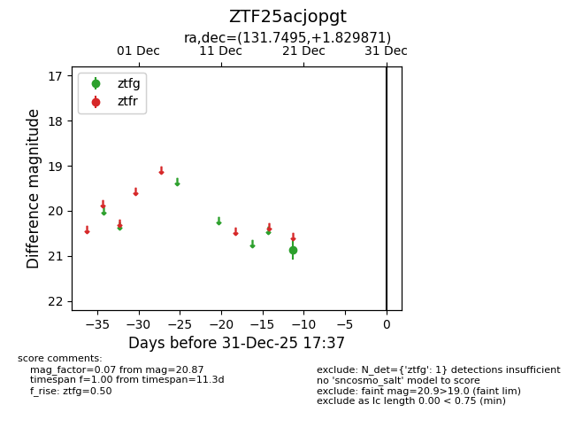
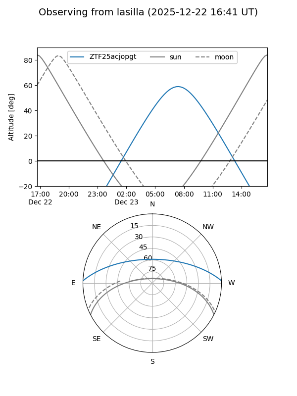
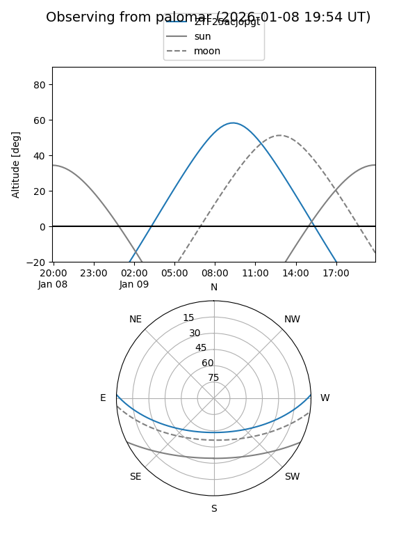

ZTF25acjopgt
Target ZTF25acjopgt at 2025-12-20 12:44
Aliases and brokers:
FINK: fink-portal.org/ZTF25acjopgt
Lasair: lasair-ztf.lsst.ac.uk/objects/ZTF25acjopgt
ALeRCE: alerce.online/object/ZTF25acjopgt
alt names
ZTF25acjopgt (ztf,fink_ztf)
Coordinates:
equatorial (ra, dec) = 131.7495,+1.82987
equatorial (HMS+DMS) = 08:46:59.88,+01:49:47.53
galactic (l, b) = (225.2922,+26.37992)
Flags:
Photometry:
last ztfg=20.87
1 ztfg detections
Lightcurve

Visibility


Additional plots